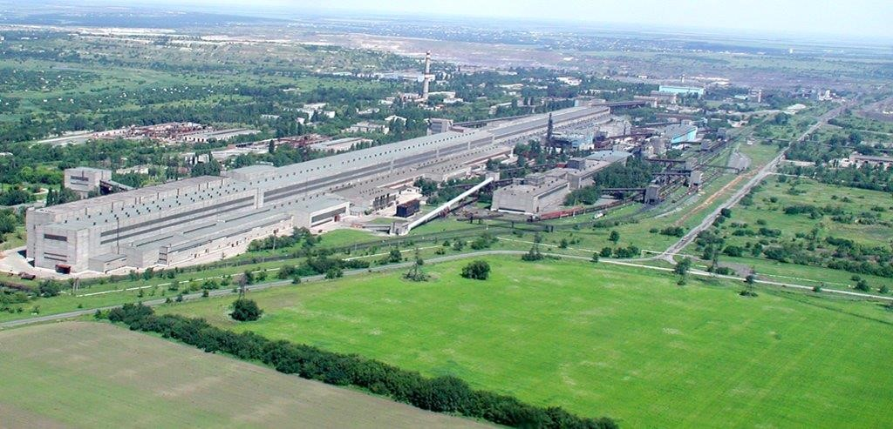

Кривий Ріг – місто обласного підпорядкування Дніпропетровської області, розташоване в центральній частині Українського кристалічного масиву у степовій зоні України на злитті річок Інгулець і Саксагань, які входять до басейну р. Дніпро.

Водні ресурси Криворіжжя представлені водами рік і штучних водоймищ, підземними водами кількох водоносних горизонтів. Водні ресурси поверхневих водних об’єктів використовуються через значне зарегулювання поверхневого стоку (на р. Саксагань і р. Інгулець). На ріках, у балках та подах Кривбасу створено 5 водосховищ і понад 100 ставків.
Клімат степовий, атлантично-континентальний, спекотне посушливе літо, помірно м’яка з частими відлигами зима. Середньорічна температура повітря становить +8,5°С. Середня температура повітря у липні +22,2°С, у січні – -5,1°С. Тривалість безморозного періоду 175 днів. Криворіжжя відноситься до посушливих районів України, кількість атмосферних опадів 400-450 мм/рік (з максимумом на початку літа). Пересічний річний показник відносної вологості повітря 72%.
Досить суттєвим є вплив метеорологічних умов на стан навколишнього природного середовища. Великий відсоток (64%) повторюваності впродовж року штилів і вітрів з малою швидкістю свідчить про те, що роль метеорологічних параметрів у накопиченні забруднюючих речовин та розсіюванні їх у атмосфері залишається сталою.
Над територією міста сформувався своєрідний мікроклімат "острова тепла". У місті тепліше на 1,8°С. Особливо це помітно в холодний період року. Також більше опадів, туманів, часто з низьких хмар і пилогазових викидів підприємств та автомобілів взимку утворюється смог, знижені дози сонячної радіації.
До складу Кривого Рогу входять: 7 районів: Металургійний (Дзержинський) район; Довгинцівський район; Покровський (Жовтневий) район; Інгулецький район; Саксаганський район; Тернівський район; Центрально-Міський район. 3 селища: Авангард, Гірницьке, Коломійцеве. 2 села: Новоіванівка, Тернуватий Кут.
Площа існуючих парків та скверів загального користування та територій міста становить більше 16 тис.га, площа озеленення територій загального користування – 1347 га. Забезпечення населення міста озелененими територіями загального користування складає 25 м 2 на одного мешканця.
Місто має потужний гірничо-металургійний комплекс. Переважна номенклатура: залізна руда, концентрат, агломерат, окатиші, чавун, сталь, готовий прокат (арматура, куток, катанка). Питома вага гірничо-металургійного комплексу – 93,4% загальних обсягів промислового виробництва в місті.